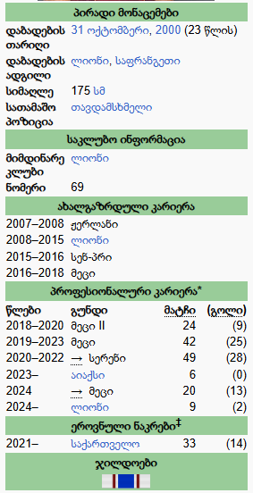
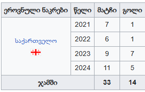
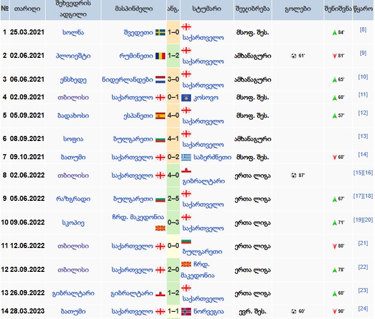
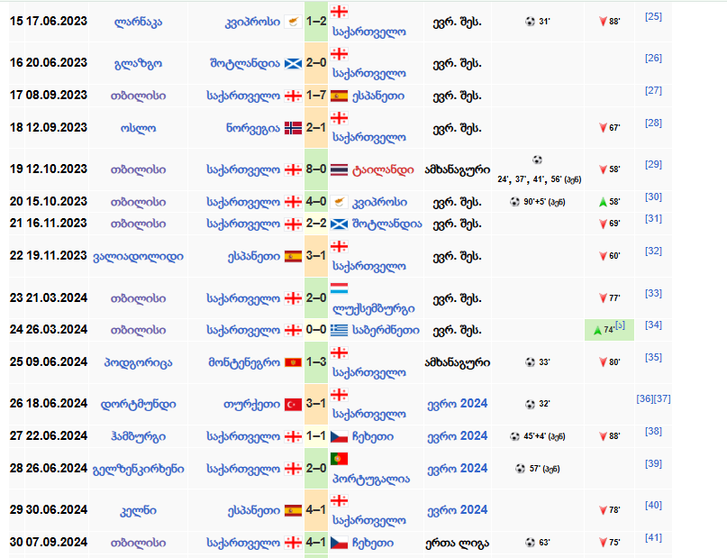

გიორგი მიქაუტაძე
გიორგი მიქაუტაძე (დ. 31 ოქტომბერი, 2000, ლიონი, საფრანგეთი) — ქართველი ფეხბურთელი. საქართველოს ეროვნული
ნაკრებისა და ლიონის „ოლიმპიკის“ თავდამსხმელი.[1] 2024 წლის ევროპის ჩემპიონატის მონაწილე საქართველოს ეროვნული
ნაკრების შემადგენლობაში.

საკლუბო კარიერა
მეცი
მიქაუტაძის დებიუტი „მეცში“ შედგა 2019 წლის 7 დეკემბერს ლიგა 1-ის მატჩში, „ნიცას“ წინააღმდეგ. „მეცმა“ შეხვედრა
ანგარიშით 1-4 წააგო.[2] 2019 წლის 10 დეკემბერს „მეცმა“ მას ოთხწლიანი კონტრაქტი გაუფორმა. მიქაუტაძისთვის ეს
პირველი პროფესიონალური კონტრაქტი იყო.[3][4]
სერენი
2020 წელს იჯარით ის ბელგიის პირველი B ლიგის (მეორე ლიგა) გუნდ „სერენში“ გადავიდა, სადაც 8 მატჩში 14 გოლი გაიტანა
და მალევე გუნდის ლიდერად იქცა. ჩატარებული რვა შეხვედრიდან მიქაუტაძემ 6 მატჩში მოახერხა გატანა. მიქაუტაძემ
„ლომელს“ 4 გოლი გაუტანა, 3-3 გაუტანა „ლიერსსა“ და „ბრიუგე II-ს“, 2 გაუტანა „მოლენბეკს“, ხოლო თითო გოლი
„დეინცესა“ და „უნიონს“. მან გოლის გატანა ვერ მოახერხა „ვესტერლოსთან“ და „ლომელთან“ მატჩებში.[5]
სანაკრებო კარიერა
მისი დებიუტი საქართველოს ეროვნულ ნაკრებში, 2021 წლის 25 მარტს, 2022 წლის მსოფლიო ჩემპიონატის შესარჩევი ეტაპის
შეხვედრაში, შვედეთის ეროვნული ნაკრების წინააღმდეგ შედგა. მიქაუტაძე თამაშში შეცვლაზე შემოვიდა. საქართველოს
ნაკრები ანგარიშით 0–1 დამარცხდა.[6]
პირველი გოლი ნაკრების მაისურით 2021 წლის 2 ივნისს, რუმინეთთან ანგარიშით 2–1 მოგებულ შეხვედრაში გაიტანა. გიორგი
მიქაუტაძეს ეკუთვნის საქართველოს ნაკრების პირველი გოლი ევროპის საფეხბურთო ჩემპიონატზე, რომელიც მან თურქეთის
ეროვნული ნაკრების წინააღმდეგ გაიტანა 2024 წლის 18 ივნისს. ჯგუფურ ეტაპზე სამ თამაშში სამი გოლი გაიტანა და ამ
ეტაპის საუკეთესო ბომბარდირი გახდა.[7]
სანაკრებო სტატისტიკა

სანაკრებო მატჩები და გოლები


Georges Mikautadze | EURO 2024 Goals & Assists